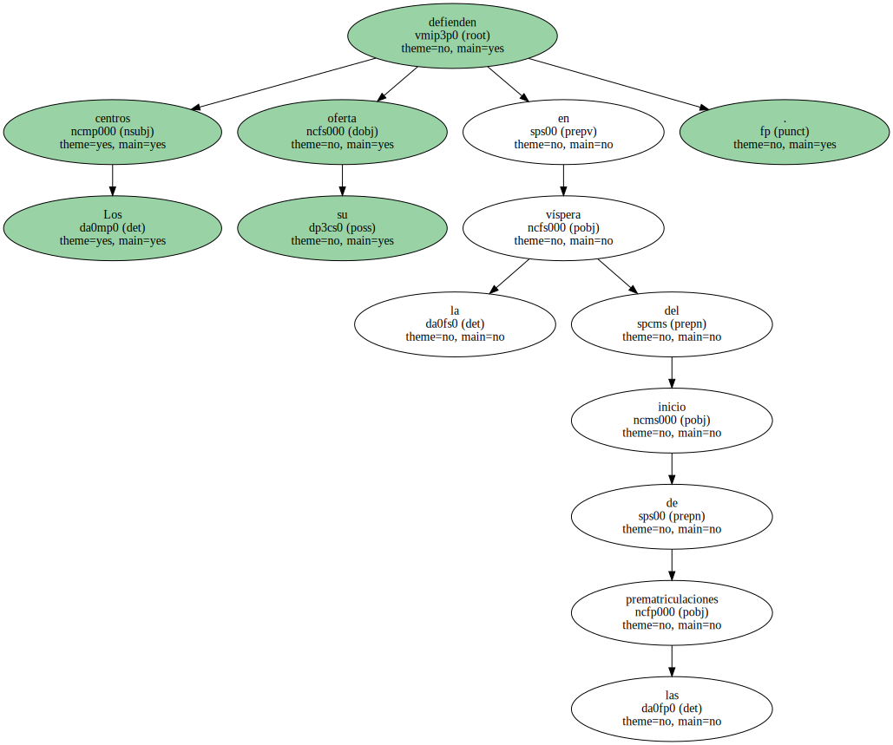
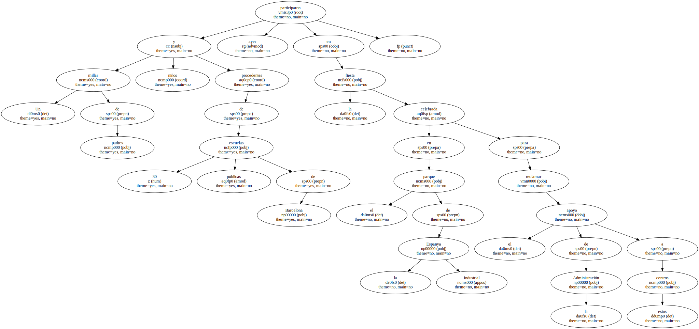
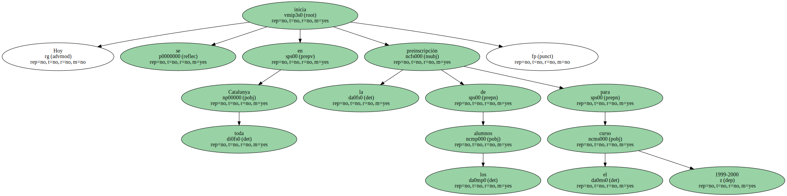
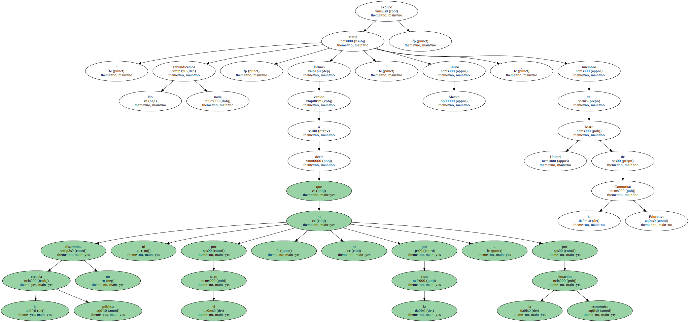
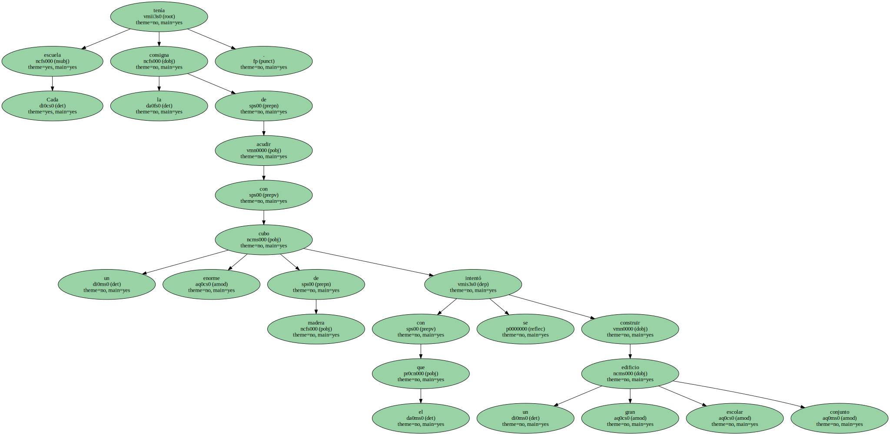
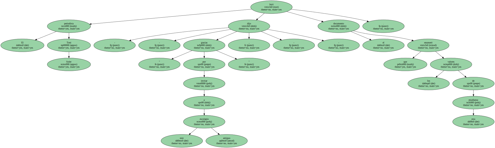
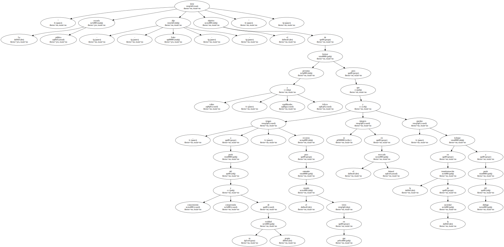

Los centros defienden su oferta en la víspera del inicio de las prematriculaciones.
Un millar de padres y niños procedentes de 30 escuelas públicas de Barcelona participaron ayer en la fiesta celebrada en el parque de la Espanya Industrial para reclamar el apoyo de la Administración a estos centros.
Hoy se inicia en toda Catalunya la preinscripción de los alumnos para el curso 1999-2000.
" No reivindicamos nada . Hemos venido a decir que la escuela pública no discrimina ni por el sexo , ni por la raza , ni por la situación económica " explicó Maria Lluïsa Massip , miembro del Marc Unitari de la Comunitat Educativa.
" Consideramos que ese mestizaje equivale a la sociedad plural en que vivimos . Si la sociedad es así , la escuela ha de ser un reflejo de ella ".

Cada escuela tenía la consigna de acudir con un enorme cubo de madera con el que se intentó construir un gran edificio escolar conjunto.
El periodista Toni Soler - - " gracias por invitar a este antiguo escolapio " , dijo - - leyó el documento que enumeró los valores de esta enseñanza.
" La escuela pública - - dijo Soler - - tiene el objetivo de formar personas cultas , equilibradas y felices para que , a partir del conocimiento y comprensión de su propia realidad , tengan recursos para entender el mundo en que viven , se integren en el mercado laboral y puedan trabajar en la transformación de la sociedad a partir del diálogo ".
Los organizadores del acto , presidido por el lema La escuela pública siempre la encontrarás abierta , pidieron a los padres que inscriban a sus hijos en centros públicos.